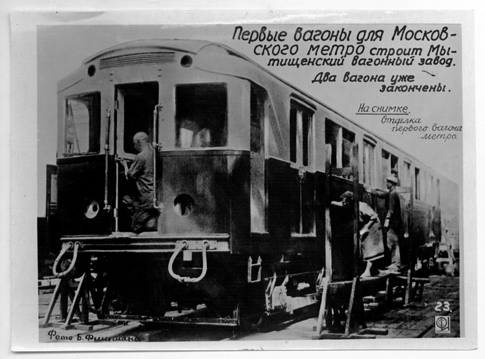

Опытный вагон типа А №1-1001
Этот опытный поезд был построен в 1934 году на Мытищинском вагоностроительном заводе (МВЗ). Поезд состоял из двух вагонов: 1 и 1001. Это были первый головной и промежуточный вагоны.
Уникальный случай, когда опытный состав сохранился, пусть и в разных городах — Москве и Баку.
История вагона
Постройка
Вагоны №1 и №1001 построены на Мытищинском вагоностроительном заводе (МВЗ) для испытаний.
Расформирование
После испытаний поезд расформировали. Вагоны эксплуатировались в разных составах.
Отправка в Баку
Вагон №1001 отправлен в Баку. Вагон №1 в июне 1954 года прошел модернизацию.
Съёмки в кино
Поезд серии А в составности 1-21-? участвовал в киноэпопее "Битва за Москву".
Капитальный ремонт
Вагон №1 прошел капитально-восстановительный ремонт (КВР) и был зачислен на баланс как музейный.
ЭКСПО 1520
Участвовал в выставке "Международный железнодорожный салон техники и технологий ЭКСПО 1520".
⚠️ На выставке вагон пострадал от вандалов — на нём появилось граффити.
Восстановление
Вагон прошёл ещё один ремонт, и к нему присоединили ещё один вагон.
Где увидеть сегодня
🚇 Москва — Вагон №1
- Местонахождение: ТЧ-3 (депо "Измайлово")
- Доступ: На ночных экскурсиях, на реконструкции запуска метро
- Состояние: Музейный, после КВР
🎬 Участвовал в киноэпопее "Битва за Москву"
🚇 Баку — Вагон №1001
- Местонахождение: В ретро-поезде Бакинского метрополитена
- Доступ: В дни рождения метро, на специальных мероприятиях
- Особенность: Один из старейших вагонов в Баку
Это один из немногих случаев, когда опытный состав сохранён, пусть и в разных городах.
Московский метрополитен пытается выкупить вагон №1001 из Баку, однако пока это не удалось.
Связь с музейной Ашкой
Вагон №1 из этого опытного поезда сегодня входит в состав музейного ретро-поезда 1 — 1031 — 21 и участвует в экскурсиях и праздничных рейсах Московского метрополитена.
🚆 Музейный состав 1-1031-21
- Составность: 1 — 1031 — 21
- Вагон №1 — самый первый вагон Московского метро
- Базируется в ТЧ-3 «Измайлово»
- Участвует в экскурсиях и реконструкциях
🔬 Опытная Ашка (здесь)
- Первый опытный поезд: №1 + №1001
- Построен в 1934 году на МВЗ
- Вагон №1 → музейный состав 1-1031-21
- Вагон №1001 → Бакинский метрополитен
Судьба вагонов: Вагон №1 после расформирования опытного поезда прошёл КВР в 2015 году и был включён в музейный состав 1-1031-21. Вагон №1001 был отправлен в Баку в 1954 году.
Фотогалерея

📸 Б. Филимана
"Вагоны типа А — это первенцы Московского метро. Они открывали движение 15 мая 1935 года. Сохранить хотя бы один такой вагон — сохранить память о том, с чего начиналось метростроение в нашей стране."